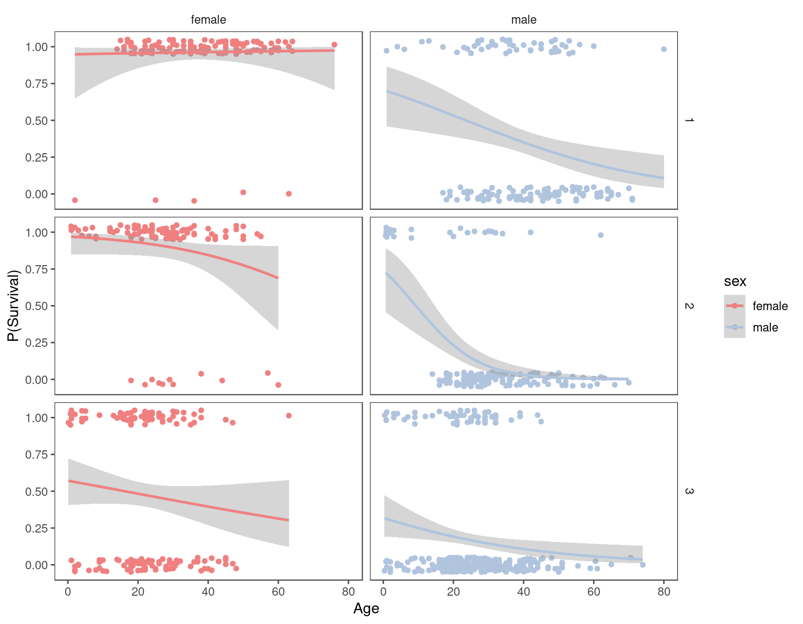

titanic = titanic::titanic_trainLogistic Regression with Titanic Dataset
Logistic Regression
In linear regression we required a numeric response \((Y)\) variable.
Our predictor variable(s) (\(X\)) can be either numeric or categorical.
What do we do if we have a categorical response? In particular, let’s focus on the situation where the response variable is categorical and binary (only two categories).
This is a VERY common situation in business, sports, healthcare, etc.
Fortunately, this type of situation can be represented by a model that is very similar to our linear regression model. Here’s what that model, a logistic regression model, would look like:
\(ln\left ( \frac{p}{1-p} \right) = \beta_0 + \beta_1 x_1 + … + \beta_n x_n\)
(this was Y before for linear regression) = intercept, slope, another slope. another slope….
The right-hand side of the equation is the same as for linear regression. We see the familiar y-intercept \(\beta_0\) and slopes \(\beta_n\). Where the difference emerges is on the left-hand side. Here we see: \(ln\left ( \frac{p}{1-p} \right)\). This is the natural log of the probability \(p\). Here \(p\) represents the probability of the “positive” category of the response variable. Note that “positive” does not necessarily mean the same thing as “good”.
Odds Ratio
The \(\frac{p}{1-p}\) ratio is referred to as the odds ratio.
Example with Titanic Data
The chart below shows how a we might visualize the relationships between age, sex, and passenger class in the Titanic dataset.

Load Titanic Data from the titanic package.
Structure and summary (as usual).
str(titanic)'data.frame': 891 obs. of 12 variables:
$ PassengerId: int 1 2 3 4 5 6 7 8 9 10 ...
$ Survived : int 0 1 1 1 0 0 0 0 1 1 ...
$ Pclass : int 3 1 3 1 3 3 1 3 3 2 ...
$ Name : chr "Braund, Mr. Owen Harris" "Cumings, Mrs. John Bradley (Florence Briggs Thayer)" "Heikkinen, Miss. Laina" "Futrelle, Mrs. Jacques Heath (Lily May Peel)" ...
$ Sex : chr "male" "female" "female" "female" ...
$ Age : num 22 38 26 35 35 NA 54 2 27 14 ...
$ SibSp : int 1 1 0 1 0 0 0 3 0 1 ...
$ Parch : int 0 0 0 0 0 0 0 1 2 0 ...
$ Ticket : chr "A/5 21171" "PC 17599" "STON/O2. 3101282" "113803" ...
$ Fare : num 7.25 71.28 7.92 53.1 8.05 ...
$ Cabin : chr "" "C85" "" "C123" ...
$ Embarked : chr "S" "C" "S" "S" ...summary(titanic) PassengerId Survived Pclass Name
Min. : 1.0 Min. :0.0000 Min. :1.000 Length:891
1st Qu.:223.5 1st Qu.:0.0000 1st Qu.:2.000 Class :character
Median :446.0 Median :0.0000 Median :3.000 Mode :character
Mean :446.0 Mean :0.3838 Mean :2.309
3rd Qu.:668.5 3rd Qu.:1.0000 3rd Qu.:3.000
Max. :891.0 Max. :1.0000 Max. :3.000
Sex Age SibSp Parch
Length:891 Min. : 0.42 Min. :0.000 Min. :0.0000
Class :character 1st Qu.:20.12 1st Qu.:0.000 1st Qu.:0.0000
Mode :character Median :28.00 Median :0.000 Median :0.0000
Mean :29.70 Mean :0.523 Mean :0.3816
3rd Qu.:38.00 3rd Qu.:1.000 3rd Qu.:0.0000
Max. :80.00 Max. :8.000 Max. :6.0000
NA's :177
Ticket Fare Cabin Embarked
Length:891 Min. : 0.00 Length:891 Length:891
Class :character 1st Qu.: 7.91 Class :character Class :character
Mode :character Median : 14.45 Mode :character Mode :character
Mean : 32.20
3rd Qu.: 31.00
Max. :512.33
Note the missing values in the potentially important Age variable.
Factor Conversion
Convert appropriate variables to factors. Re-code factor levels for Survived to be easier to read. Delete unused variables.
titanic = titanic %>% mutate(Survived = as_factor(Survived)) %>%
mutate(Survived = fct_recode(Survived, "No" = "0", "Yes" = "1" )) %>%
mutate(Pclass = as_factor(Pclass)) %>% mutate(Sex = as_factor(Sex)) %>%
select(-PassengerId, -Name, -Ticket, -Fare, -Cabin, -Embarked)
str(titanic)'data.frame': 891 obs. of 6 variables:
$ Survived: Factor w/ 2 levels "No","Yes": 1 2 2 2 1 1 1 1 2 2 ...
$ Pclass : Factor w/ 3 levels "1","2","3": 3 1 3 1 3 3 1 3 3 2 ...
$ Sex : Factor w/ 2 levels "male","female": 1 2 2 2 1 1 1 1 2 2 ...
$ Age : num 22 38 26 35 35 NA 54 2 27 14 ...
$ SibSp : int 1 1 0 1 0 0 0 3 0 1 ...
$ Parch : int 0 0 0 0 0 0 0 1 2 0 ...Dealing with Missingness
Here we use imputation for the Age variable (as we have done before).
set.seed(1234) #sets seed for random number generator
imp_age = mice(titanic, m=5, method='pmm', printFlag=FALSE)
#m is the number of imputations, 5 is a reasonable value as a default
#pmm is "predictive mean matching" = imputation method for numeric data
#printFlag reduces amount of output
summary(imp_age)Class: mids
Number of multiple imputations: 5
Imputation methods:
Survived Pclass Sex Age SibSp Parch
"" "" "" "pmm" "" ""
PredictorMatrix:
Survived Pclass Sex Age SibSp Parch
Survived 0 1 1 1 1 1
Pclass 1 0 1 1 1 1
Sex 1 1 0 1 1 1
Age 1 1 1 0 1 1
SibSp 1 1 1 1 0 1
Parch 1 1 1 1 1 0titanic_complete = complete(imp_age)
summary(titanic_complete) Survived Pclass Sex Age SibSp
No :549 1:216 male :577 Min. : 0.42 Min. :0.000
Yes:342 2:184 female:314 1st Qu.:19.00 1st Qu.:0.000
3:491 Median :28.00 Median :0.000
Mean :29.32 Mean :0.523
3rd Qu.:39.00 3rd Qu.:1.000
Max. :80.00 Max. :8.000
Parch
Min. :0.0000
1st Qu.:0.0000
Median :0.0000
Mean :0.3816
3rd Qu.:0.0000
Max. :6.0000 Visualization
We have performed visualization of each variable against Survived before, but let’s do it again just as a quick reminder.
ggplot(titanic_complete, aes(x=Pclass, fill = Survived)) + geom_bar() + theme_bw()
Alternative (look at tabular data)
titanic_complete %>% tabyl(Survived,Pclass) %>%
adorn_percentages("col") Survived 1 2 3
No 0.3703704 0.5271739 0.7576375
Yes 0.6296296 0.4728261 0.2423625Makes sense that passenger class predicts survival.
ggplot(titanic_complete, aes(x=Sex, fill = Survived)) + geom_bar() + theme_bw()
titanic_complete %>% tabyl(Survived,Sex) %>%
adorn_percentages("col") Survived male female
No 0.8110919 0.2579618
Yes 0.1889081 0.7420382This data supports the notion that women survived at a higher rate than men.
ggplot(titanic_complete, aes(x=Survived, y= Age)) + geom_boxplot() + theme_bw()
Age, on its own, does not seem to predict survival. There is little difference in the age distribution of survivors and those that did not survive.
ggplot(titanic_complete, aes(x=SibSp, fill = Survived)) + geom_bar() + theme_bw()
Hard to tell much from the graph. Alternative (look at tabular data)
titanic_complete %>% tabyl(Survived,SibSp) %>%
adorn_percentages("col") Survived 0 1 2 3 4 5 8
No 0.6546053 0.4641148 0.5357143 0.75 0.8333333 1 1
Yes 0.3453947 0.5358852 0.4642857 0.25 0.1666667 0 0Larger numbers of siblings + spouses seems to suggest less chance of survival, but the sample size for the larger numbers is pretty low. Being alone (SibSp = 0) seems to be bad.
ggplot(titanic_complete, aes(x=Parch, fill = Survived)) + geom_bar() + theme_bw()
Similar to above, hard to tell much from the graph. Alternative (look at tabular data)
titanic_complete %>% tabyl(Survived,Parch) %>%
adorn_percentages("col") Survived 0 1 2 3 4 5 6
No 0.6563422 0.4491525 0.5 0.4 1 0.8 1
Yes 0.3436578 0.5508475 0.5 0.6 0 0.2 0Some decrease in survival rate as Parch increases, but still dealing with small samples.
In accordance with Dr. Hill, (turn the model into a categorical variable model to lump in a more than ___ {for the SibSp/ParCh that exceed more than 3 bc it is such a small data set})
Building Logistic Regression Models
We know Pclass is important. Let’s build a model with Pclass. Note the format and the use of the glm function. The structure of the syntax is very similar to a linear regression model.
response varible ~ the predictor (Y ~ X)
mod1 = glm(Survived ~ Pclass , titanic_complete, family = "binomial")
summary(mod1)
Call:
glm(formula = Survived ~ Pclass, family = "binomial", data = titanic_complete)
Coefficients:
Estimate Std. Error z value Pr(>|z|)
(Intercept) 0.5306 0.1409 3.766 0.000166 ***
Pclass2 -0.6394 0.2041 -3.133 0.001731 **
Pclass3 -1.6704 0.1759 -9.496 < 2e-16 ***
---
Signif. codes: 0 '***' 0.001 '**' 0.01 '*' 0.05 '.' 0.1 ' ' 1
(Dispersion parameter for binomial family taken to be 1)
Null deviance: 1186.7 on 890 degrees of freedom
Residual deviance: 1083.1 on 888 degrees of freedom
AIC: 1089.1
Number of Fisher Scoring iterations: 4Estimate Std. = shows the natural log (pos/neg and the relative size & direction is all we need to know)
[1st class is best]
- AIC
- P value
- Slopes
Pclass has three levels (1, 2, and 3) representing each of the three classes of passenger on the ship. The variable is represented by two of these categories in model summary. Note the negative coefficients for Pclass2 and Pclass3. This suggests that probability of survival drops for those classes compared to first class (as we expect). The dropoff is more severe (larger coefficient) for Pclass3.
CAUTION: Model coefficients do NOT directly tell us the change in probability!
Note the AIC of this model (a measure of model quality) is 1089.1. We can use this value to compare this model to others. Smaller AIC is better.
Add gender to the model.
(Binomial = Logistic Regression)
mod2 = glm(Survived ~ Pclass + Sex, titanic_complete, family = "binomial")
summary(mod2)
Call:
glm(formula = Survived ~ Pclass + Sex, family = "binomial", data = titanic_complete)
Coefficients:
Estimate Std. Error z value Pr(>|z|)
(Intercept) -0.3448 0.1679 -2.053 0.040080 *
Pclass2 -0.8380 0.2447 -3.424 0.000618 ***
Pclass3 -1.9055 0.2141 -8.898 < 2e-16 ***
Sexfemale 2.6419 0.1841 14.351 < 2e-16 ***
---
Signif. codes: 0 '***' 0.001 '**' 0.01 '*' 0.05 '.' 0.1 ' ' 1
(Dispersion parameter for binomial family taken to be 1)
Null deviance: 1186.66 on 890 degrees of freedom
Residual deviance: 826.89 on 887 degrees of freedom
AIC: 834.89
Number of Fisher Scoring iterations: 4Males are much less likely to survive than females (as expected). The AIC of this model is less than for the first model, so this model is better.
Add Age.
AIC = quality of a model (SMALLER IS BETTER)
Metric is only useful in comparison
mod3 = glm(Survived ~ Pclass + Sex + Age , titanic_complete, family = "binomial")
summary(mod3)
Call:
glm(formula = Survived ~ Pclass + Sex + Age, family = "binomial",
data = titanic_complete)
Coefficients:
Estimate Std. Error z value Pr(>|z|)
(Intercept) 1.001405 0.312100 3.209 0.00133 **
Pclass2 -1.178727 0.260274 -4.529 5.93e-06 ***
Pclass3 -2.459637 0.249514 -9.858 < 2e-16 ***
Sexfemale 2.603539 0.187510 13.885 < 2e-16 ***
Age -0.033320 0.006525 -5.107 3.28e-07 ***
---
Signif. codes: 0 '***' 0.001 '**' 0.01 '*' 0.05 '.' 0.1 ' ' 1
(Dispersion parameter for binomial family taken to be 1)
Null deviance: 1186.66 on 890 degrees of freedom
Residual deviance: 799.17 on 886 degrees of freedom
AIC: 809.17
Number of Fisher Scoring iterations: 5In this model, Age is significant and has a negative coefficient (older = less likely to survive). AIC of this model is better.
Predictions
Let’s make predictions on sample passenger. By setting type = “response” we are ensuring that we get a predicted probability.
newdata = data.frame(Sex = "male", Pclass = "3", Age = 44)
predict(mod3, newdata, type="response") 1
0.05096464 If we were forced to classify this passenger as survived or died, what would we pick?
Not looking good…RIP (5%, didn’t survive)
Another passenger.
newdata = data.frame(Sex = "female", Pclass = "1", Age = 10)
predict(mod3, newdata, type="response") 1
0.9634466 If we were forced to classify this passenger as survived or died, what would we pick?
This looks good (96%, She will likely survive)
One more.
newdata = data.frame(Sex = "male", Pclass = "2", Age = 22)
predict(mod3, newdata, type="response") 1
0.2869255 If we were forced to classify this passenger as survived or died, what would we pick?
RIP (28%, He didn’t make it)